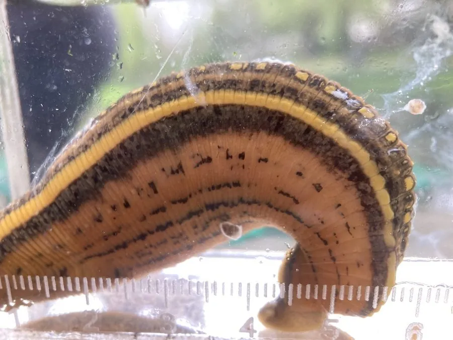

其他无脊椎动物 · 动物界
宽体金线蛭 Whitmania pigra

体型宽扁、背部有五条黑黄相间纵纹的大型蛭类，以螺类体液为食，并不吸人血，是中药“水蛭”的主要来源之一。
- 分类
- 门环节动物门纲蛭纲目无吻蛭目科医蛭科属金线蛭属
- 栖息环境
- 池塘、湖泊、稻田、沟渠与缓流河湾，喜多水草的浅水区
- 地理分布
- 中国长江流域及华北、华南的淡水水域，日本与朝鲜半岛也有
- 保护级别
- 暂无评估
物种志
宽体金线蛭体长6–13厘米，体宽可达1–1.5厘米，身体扁平宽大，背部有5条细密的黑黄相间纵纹，因此得名金线蛭。前端有一个小吸盘，后端吸盘较大而圆，体表有许多感觉乳突；伸展时体色偏黄绿，收缩时颜色变深。
它生活在池塘、湖泊、稻田、沟渠和缓流的河湾里，喜欢水草茂密的浅水区。与吸血蚂蟥不同，宽体金线蛭以螺、蚌等软体动物的体液为食，用吸盘固定猎物后靠咽部肌肉吮吸，一般不吸人血；不过同科的一些蛭类会吸血，野外涉水时仍需留意。它雌雄同体，异体受精，卵茧产在潮湿泥土中。宽体金线蛭是中药水蛭的主要来源，体内含水蛭素等活性成分，因过度捕捉，野生资源已明显减少。
形态与习性
- 体长6–13厘米，体宽可达1–1.5厘米
- 纵纹背部有5条黑黄相间的细密纵纹
- 食性以螺、蚌等软体动物体液为食，一般不吸人血
- 繁殖雌雄同体，异体受精，卵茧产于潮湿泥土
- 药用中药水蛭的主要来源，含蛭素等活性成分
- 野外提示同科部分蛭类会吸血，涉水时仍需防护
趣味知识
- 宽体金线蛭主要吸食螺蚌的体液，一般不吸人血。
- 它背上的5条黑黄纵纹是野外辨认它的关键特征。
- 它是中药水蛭的主要来源，体内含水蛭素。